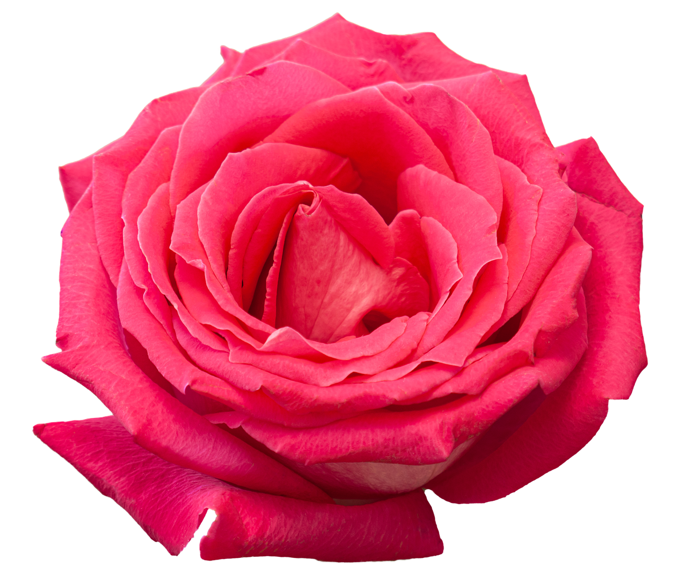
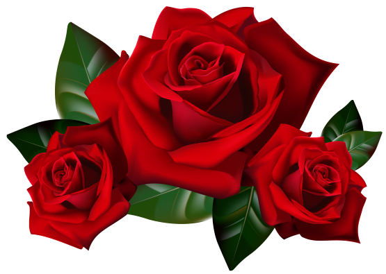
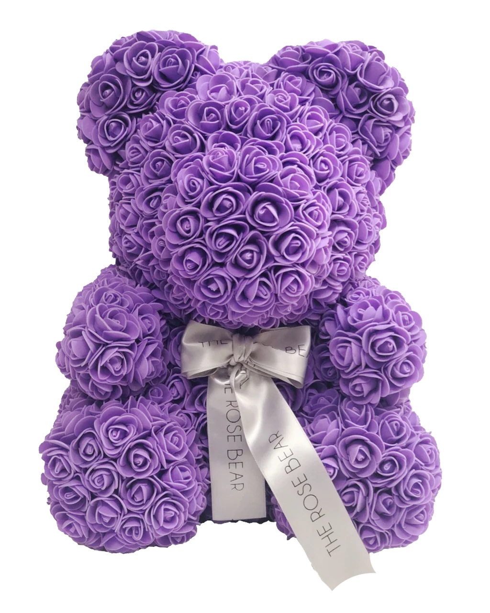

Happy Woman's Day





I need a lover to keep me sane Pull me from hell, bring me back again Play me the classics Something romantic Give him my all when I don't even have it I always dreamed of a solemn face Someone who feels like a holiday But now I'm in pieces Barely believing Starting to think that I've lost all feeling You came out the blue on a rainy night No lie I'll tell you how I almost died While you're bringing me back to life I just wanna live in this moment forever 'Cause I'm afraid that living couldn't get any better Started giving up on the word "forever" Until you gave up heaven, so we could be together You're my angel Angel baby, angel You're my angel, baby Baby, you're my angel Angel baby I fall in love with the little things Counting the tattoos on your skin Tell me a secret And baby, I'll keep it And maybe we could play house for the weekend You came out the blue on a rainy night No lie I'll tell you how I almost died While you're bringing me back to life I just wanna live in this moment forever 'Cause I'm afraid that living couldn't get any better Started giving up on the word "forever" Until you gave up heaven, so we could be together You're my angel Angel baby, angel You're my angel, baby Baby, you're my angel Angel baby All the sick and twisted nights that I've been waiting for ya They were worth it all along, yeah I just wanna live in this moment forever 'Cause I'm afraid that living couldn't get any better Started giving up on the word "forever" (on the word "forever") Until you gave up heaven, so we could be together You're my angel Angel baby, angel You're my angel, baby Baby, you're my angel Angel baby Angel Angel baby, angel (you're my angel, baby) You're my angel, baby (you're my angel, baby) Baby, you're my angel Angel baby I need a lover to keep me sane Pull me from hell, bring me back again Play me the classics Something romantic Give him my all when I don't even have it I always dreamed of a solemn face Someone who feels like a holiday But now I'm in pieces Barely believing Starting to think that I've lost all feeling You came out the blue on a rainy night No lie I'll tell you how I almost died While you're bringing me back to life I just wanna live in this moment forever 'Cause I'm afraid that living couldn't get any better Started giving up on the word "forever" Until you gave up heaven, so we could be together You're my angel Angel baby, angel You're my angel, baby Baby, you're my angel Angel baby I fall in love with the little things Counting the tattoos on your skin Tell me a secret And baby, I'll keep it And maybe we could play house for the weekend You came out the blue on a rainy night No lie I'll tell you how I almost died While you're bringing me back to life I just wanna live in this moment forever 'Cause I'm afraid that living couldn't get any better Started giving up on the word "forever" Until you gave up heaven, so we could be together You're my angel Angel baby, angel You're my angel, baby Baby, you're my angel Angel baby All the sick and twisted nights that I've been waiting for ya They were worth it all along, yeah I just wanna live in this moment forever 'Cause I'm afraid that living couldn't get any better Started giving up on the word "forever" (on the word "forever") Until you gave up heaven, so we could be together You're my angel Angel baby, angel You're my angel, baby Baby, you're my angel Angel baby Angel Angel baby, angel (you're my angel, baby) You're my angel, baby (you're my angel, baby) Baby, you're my angel Angel baby I need a lover to keep me sane Pull me from hell, bring me back again Play me the classics Something romantic Give him my all when I don't even have it I always dreamed of a solemn face Someone who feels like a holiday But now I'm in pieces Barely believing Starting to think that I've lost all feeling You came out the blue on a rainy night No lie I'll tell you how I almost died While you're bringing me back to life I just wanna live in this moment forever 'Cause I'm afraid that living couldn't get any better Started giving up on the word "forever" Until you gave up heaven, so we could be together You're my angel Angel baby, angel You're my angel, baby Baby, you're my angel Angel baby I fall in love with the little things Counting the tattoos on your skin Tell me a secret And baby, I'll keep it And maybe we could play house for the weekend You came out the blue on a rainy night No lie I'll tell you how I almost died While you're bringing me back to life I just wanna live in this moment forever 'Cause I'm afraid that living couldn't get any better Started giving up on the word "forever" Until you gave up heaven, so we could be together You're my angel Angel baby, angel You're my angel, baby Baby, you're my angel Angel baby All the sick and twisted nights that I've been waiting for ya They were worth it all along, yeah I just wanna live in this moment forever 'Cause I'm afraid that living couldn't get any better Started giving up on the word "forever" (on the word "forever") Until you gave up heaven, so we could be together You're my angel Angel baby, angel You're my angel, baby Baby, you're my angel Angel baby Angel Angel baby, angel (you're my angel, baby) You're my angel, baby (you're my angel, baby) Baby, you're my angel Angel baby I need a lover to keep me sane Pull me from hell, bring me back again Play me the classics Something romantic Give him my all when I don't even have it I always dreamed of a solemn face Someone who feels like a holiday But now I'm in pieces Barely believing Starting to think that I've lost all feeling You came out the blue on a rainy night No lie I'll tell you how I almost died While you're bringing me back to life I just wanna live in this moment forever 'Cause I'm afraid that living couldn't get any better Started giving up on the word "forever" Until you gave up heaven, so we could be together You're my angel Angel baby, angel You're my angel, baby Baby, you're my angel Angel baby I fall in love with the little things Counting the tattoos on your skin Tell me a secret And baby, I'll keep it And maybe we could play house for the weekend You came out the blue on a rainy night No lie I'll tell you how I almost died While you're bringing me back to life I just wanna live in this moment forever 'Cause I'm afraid that living couldn't get any better Started giving up on the word "forever" Until you gave up heaven, so we could be together You're my angel Angel baby, angel You're my angel, baby Baby, you're my angel Angel baby All the sick and twisted nights that I've been waiting for ya They were worth it all along, yeah I just wanna live in this moment forever 'Cause I'm afraid that living couldn't get any better Started giving up on the word "forever" (on the word "forever") Until you gave up heaven, so we could be together You're my angel Angel baby, angel You're my angel, baby Baby, you're my angel Angel baby Angel Angel baby, angel (you're my angel, baby) You're my angel, baby (you're my angel, baby) Baby, you're my angel Angel baby I need a lover to keep me sane Pull me from hell, bring me back again Play me the classics Something romantic Give him my all when I don't even have it I always dreamed of a solemn face Someone who feels like a holiday But now I'm in pieces Barely believing Starting to think that I've lost all feeling You came out the blue on a rainy night No lie I'll tell you how I almost died While you're bringing me back to life I just wanna live in this moment forever 'Cause I'm afraid that living couldn't get any better Started giving up on the word "forever" Until you gave up heaven, so we could be together You're my angel Angel baby, angel You're my angel, baby Baby, you're my angel Angel baby I fall in love with the little things Counting the tattoos on your skin Tell me a secret And baby, I'll keep it And maybe we could play house for the weekend You came out the blue on a rainy night No lie I'll tell you how I almost died While you're bringing me back to life I just wanna live in this moment forever 'Cause I'm afraid that living couldn't get any better Started giving up on the word "forever" Until you gave up heaven, so we could be together You're my angel Angel baby, angel You're my angel, baby Baby, you're my angel Angel baby All the sick and twisted nights that I've been waiting for ya They were worth it all along, yeah I just wanna live in this moment forever 'Cause I'm afraid that living couldn't get any better Started giving up on the word "forever" (on the word "forever") Until you gave up heaven, so we could be together You're my angel Angel baby, angel You're my angel, baby Baby, you're my angel Angel baby Angel Angel baby, angel (you're my angel, baby) You're my angel, baby (you're my angel, baby) Baby, you're my angel Angel baby I need a lover to keep me sane Pull me from hell, bring me back again Play me the classics Something romantic Give him my all when I don't even have it I always dreamed of a solemn face Someone who feels like a holiday But now I'm in pieces Barely believing Starting to think that I've lost all feeling You came out the blue on a rainy night No lie I'll tell you how I almost died While you're bringing me back to life I just wanna live in this moment forever 'Cause I'm afraid that living couldn't get any better Started giving up on the word "forever" Until you gave up heaven, so we could be together You're my angel Angel baby, angel You're my angel, baby Baby, you're my angel Angel baby I fall in love with the little things Counting the tattoos on your skin Tell me a secret And baby, I'll keep it And maybe we could play house for the weekend You came out the blue on a rainy night No lie I'll tell you how I almost died While you're bringing me back to life I just wanna live in this moment forever 'Cause I'm afraid that living couldn't get any better Started giving up on the word "forever" Until you gave up heaven, so we could be together You're my angel Angel baby, angel You're my angel, baby Baby, you're my angel Angel baby All the sick and twisted nights that I've been waiting for ya They were worth it all along, yeah I just wanna live in this moment forever 'Cause I'm afraid that living couldn't get any better Started giving up on the word "forever" (on the word "forever") Until you gave up heaven, so we could be together You're my angel Angel baby, angel You're my angel, baby Baby, you're my angel Angel baby Angel Angel baby, angel (you're my angel, baby) You're my angel, baby (you're my angel, baby) Baby, you're my angel Angel baby I need a lover to keep me sane Pull me from hell, bring me back again Play me the classics Something romantic Give him my all when I don't even have it I always dreamed of a solemn face Someone who feels like a holiday But now I'm in pieces Barely believing Starting to think that I've lost all feeling You came out the blue on a rainy night No lie I'll tell you how I almost died While you're bringing me back to life I just wanna live in this moment forever 'Cause I'm afraid that living couldn't get any better Started giving up on the word "forever" Until you gave up heaven, so we could be together You're my angel Angel baby, angel You're my angel, baby Baby, you're my angel Angel baby I fall in love with the little things Counting the tattoos on your skin Tell me a secret And baby, I'll keep it And maybe we could play house for the weekend You came out the blue on a rainy night No lie I'll tell you how I almost died While you're bringing me back to life I just wanna live in this moment forever 'Cause I'm afraid that living couldn't get any better Started giving up on the word "forever" Until you gave up heaven, so we could be together You're my angel Angel baby, angel You're my angel, baby Baby, you're my angel Angel baby All the sick and twisted nights that I've been waiting for ya They were worth it all along, yeah I just wanna live in this moment forever 'Cause I'm afraid that living couldn't get any better Started giving up on the word "forever" (on the word "forever") Until you gave up heaven, so we could be together You're my angel Angel baby, angel You're my angel, baby Baby, you're my angel Angel baby Angel Angel baby, angel (you're my angel, baby) You're my angel, baby (you're my angel, baby) Baby, you're my angel Angel baby I need a lover to keep me sane Pull me from hell, bring me back again Play me the classics Something romantic Give him my all when I don't even have it I always dreamed of a solemn face Someone who feels like a holiday But now I'm in pieces Barely believing Starting to think that I've lost all feeling You came out the blue on a rainy night No lie I'll tell you how I almost died While you're bringing me back to life I just wanna live in this moment forever 'Cause I'm afraid that living couldn't get any better Started giving up on the word "forever" Until you gave up heaven, so we could be together You're my angel Angel baby, angel You're my angel, baby Baby, you're my angel Angel baby I fall in love with the little things Counting the tattoos on your skin Tell me a secret And baby, I'll keep it And maybe we could play house for the weekend You came out the blue on a rainy night No lie I'll tell you how I almost died While you're bringing me back to life I just wanna live in this moment forever 'Cause I'm afraid that living couldn't get any better Started giving up on the word "forever" Until you gave up heaven, so we could be together You're my angel Angel baby, angel You're my angel, baby Baby, you're my angel Angel baby All the sick and twisted nights that I've been waiting for ya They were worth it all along, yeah I just wanna live in this moment forever 'Cause I'm afraid that living couldn't get any better Started giving up on the word "forever" (on the word "forever") Until you gave up heaven, so we could be together You're my angel Angel baby, angel You're my angel, baby Baby, you're my angel Angel baby Angel Angel baby, angel (you're my angel, baby) You're my angel, baby (you're my angel, baby) Baby, you're my angel Angel baby I need a lover to keep me sane Pull me from hell, bring me back again Play me the classics Something romantic Give him my all when I don't even have it I always dreamed of a solemn face Someone who feels like a holiday But now I'm in pieces Barely believing Starting to think that I've lost all feeling You came out the blue on a rainy night No lie I'll tell you how I almost died While you're bringing me back to life I just wanna live in this moment forever 'Cause I'm afraid that living couldn't get any better Started giving up on the word "forever" Until you gave up heaven, so we could be together You're my angel Angel baby, angel You're my angel, baby Baby, you're my angel Angel baby I fall in love with the little things Counting the tattoos on your skin Tell me a secret And baby, I'll keep it And maybe we could play house for the weekend You came out the blue on a rainy night No lie I'll tell you how I almost died While you're bringing me back to life I just wanna live in this moment forever 'Cause I'm afraid that living couldn't get any better Started giving up on the word "forever" Until you gave up heaven, so we could be together You're my angel Angel baby, angel You're my angel, baby Baby, you're my angel Angel baby All the sick and twisted nights that I've been waiting for ya They were worth it all along, yeah I just wanna live in this moment forever 'Cause I'm afraid that living couldn't get any better Started giving up on the word "forever" (on the word "forever") Until you gave up heaven, so we could be together You're my angel Angel baby, angel You're my angel, baby Baby, you're my angel Angel baby Angel Angel baby, angel (you're my angel, baby) You're my angel, baby (you're my angel, baby) Baby, you're my angel Angel baby I need a lover to keep me sane Pull me from hell, bring me back again Play me the classics Something romantic Give him my all when I don't even have it I always dreamed of a solemn face Someone who feels like a holiday But now I'm in pieces Barely believing Starting to think that I've lost all feeling You came out the blue on a rainy night No lie I'll tell you how I almost died While you're bringing me back to life I just wanna live in this moment forever 'Cause I'm afraid that living couldn't get any better Started giving up on the word "forever" Until you gave up heaven, so we could be together You're my angel Angel baby, angel You're my angel, baby Baby, you're my angel Angel baby I fall in love with the little things Counting the tattoos on your skin Tell me a secret And baby, I'll keep it And maybe we could play house for the weekend You came out the blue on a rainy night No lie I'll tell you how I almost died While you're bringing me back to life I just wanna live in this moment forever 'Cause I'm afraid that living couldn't get any better Started giving up on the word "forever" Until you gave up heaven, so we could be together You're my angel Angel baby, angel You're my angel, baby Baby, you're my angel Angel baby All the sick and twisted nights that I've been waiting for ya They were worth it all along, yeah I just wanna live in this moment forever 'Cause I'm afraid that living couldn't get any better Started giving up on the word "forever" (on the word "forever") Until you gave up heaven, so we could be together You're my angel Angel baby, angel You're my angel, baby Baby, you're my angel Angel baby Angel Angel baby, angel (you're my angel, baby) You're my angel, baby (you're my angel, baby) Baby, you're my angel Angel baby I need a lover to keep me sane Pull me from hell, bring me back again Play me the classics Something romantic Give him my all when I don't even have it I always dreamed of a solemn face Someone who feels like a holiday But now I'm in pieces Barely believing Starting to think that I've lost all feeling You came out the blue on a rainy night No lie I'll tell you how I almost died While you're bringing me back to life I just wanna live in this moment forever 'Cause I'm afraid that living couldn't get any better Started giving up on the word "forever" Until you gave up heaven, so we could be together You're my angel Angel baby, angel You're my angel, baby Baby, you're my angel Angel baby I fall in love with the little things Counting the tattoos on your skin Tell me a secret And baby, I'll keep it And maybe we could play house for the weekend You came out the blue on a rainy night No lie I'll tell you how I almost died While you're bringing me back to life I just wanna live in this moment forever 'Cause I'm afraid that living couldn't get any better Started giving up on the word "forever" Until you gave up heaven, so we could be together You're my angel Angel baby, angel You're my angel, baby Baby, you're my angel Angel baby All the sick and twisted nights that I've been waiting for ya They were worth it all along, yeah I just wanna live in this moment forever 'Cause I'm afraid that living couldn't get any better Started giving up on the word "forever" (on the word "forever") Until you gave up heaven, so we could be together You're my angel Angel baby, angel You're my angel, baby Baby, you're my angel Angel baby Angel Angel baby, angel (you're my angel, baby) You're my angel, baby (you're my angel, baby) Baby, you're my angel Angel baby I need a lover to keep me sane Pull me from hell, bring me back again Play me the classics Something romantic Give him my all when I don't even have it I always dreamed of a solemn face Someone who feels like a holiday But now I'm in pieces Barely believing Starting to think that I've lost all feeling You came out the blue on a rainy night No lie I'll tell you how I almost died While you're bringing me back to life I just wanna live in this moment forever 'Cause I'm afraid that living couldn't get any better Started giving up on the word "forever" Until you gave up heaven, so we could be together You're my angel Angel baby, angel You're my angel, baby Baby, you're my angel Angel baby I fall in love with the little things Counting the tattoos on your skin Tell me a secret And baby, I'll keep it And maybe we could play house for the weekend You came out the blue on a rainy night No lie I'll tell you how I almost died While you're bringing me back to life I just wanna live in this moment forever 'Cause I'm afraid that living couldn't get any better Started giving up on the word "forever" Until you gave up heaven, so we could be together You're my angel Angel baby, angel You're my angel, baby Baby, you're my angel Angel baby All the sick and twisted nights that I've been waiting for ya They were worth it all along, yeah I just wanna live in this moment forever 'Cause I'm afraid that living couldn't get any better Started giving up on the word "forever" (on the word "forever") Until you gave up heaven, so we could be together You're my angel Angel baby, angel You're my angel, baby Baby, you're my angel Angel baby Angel Angel baby, angel (you're my angel, baby) You're my angel, baby (you're my angel, baby) Baby, you're my angel Angel baby I need a lover to keep me sane Pull me from hell, bring me back again Play me the classics Something romantic Give him my all when I don't even have it I always dreamed of a solemn face Someone who feels like a holiday But now I'm in pieces Barely believing Starting to think that I've lost all feeling You came out the blue on a rainy night No lie I'll tell you how I almost died While you're bringing me back to life I just wanna live in this moment forever 'Cause I'm afraid that living couldn't get any better Started giving up on the word "forever" Until you gave up heaven, so we could be together You're my angel Angel baby, angel You're my angel, baby Baby, you're my angel Angel baby I fall in love with the little things Counting the tattoos on your skin Tell me a secret And baby, I'll keep it And maybe we could play house for the weekend You came out the blue on a rainy night No lie I'll tell you how I almost died While you're bringing me back to life I just wanna live in this moment forever 'Cause I'm afraid that living couldn't get any better Started giving up on the word "forever" Until you gave up heaven, so we could be together You're my angel Angel baby, angel You're my angel, baby Baby, you're my angel Angel baby All the sick and twisted nights that I've been waiting for ya They were worth it all along, yeah I just wanna live in this moment forever 'Cause I'm afraid that living couldn't get any better Started giving up on the word "forever" (on the word "forever") Until you gave up heaven, so we could be together You're my angel Angel baby, angel You're my angel, baby Baby, you're my angel Angel baby Angel Angel baby, angel (you're my angel, baby) You're my angel, baby (you're my angel, baby) Baby, you're my angel Angel baby I need a lover to keep me sane Pull me from hell, bring me back again Play me the classics Something romantic Give him my all when I don't even have it I always dreamed of a solemn face Someone who feels like a holiday But now I'm in pieces Barely believing Starting to think that I've lost all feeling You came out the blue on a rainy night No lie I'll tell you how I almost died While you're bringing me back to life I just wanna live in this moment forever 'Cause I'm afraid that living couldn't get any better Started giving up on the word "forever" Until you gave up heaven, so we could be together You're my angel Angel baby, angel You're my angel, baby Baby, you're my angel Angel baby I fall in love with the little things Counting the tattoos on your skin Tell me a secret And baby, I'll keep it And maybe we could play house for the weekend You came out the blue on a rainy night No lie I'll tell you how I almost died While you're bringing me back to life I just wanna live in this moment forever 'Cause I'm afraid that living couldn't get any better Started giving up on the word "forever" Until you gave up heaven, so we could be together You're my angel Angel baby, angel You're my angel, baby Baby, you're my angel Angel baby All the sick and twisted nights that I've been waiting for ya They were worth it all along, yeah I just wanna live in this moment forever 'Cause I'm afraid that living couldn't get any better Started giving up on the word "forever" (on the word "forever") Until you gave up heaven, so we could be together You're my angel Angel baby, angel You're my angel, baby Baby, you're my angel Angel baby Angel Angel baby, angel (you're my angel, baby) You're my angel, baby (you're my angel, baby) Baby, you're my angel Angel baby I need a lover to keep me sane Pull me from hell, bring me back again Play me the classics Something romantic Give him my all when I don't even have it I always dreamed of a solemn face Someone who feels like a holiday But now I'm in pieces Barely believing Starting to think that I've lost all feeling You came out the blue on a rainy night No lie I'll tell you how I almost died While you're bringing me back to life I just wanna live in this moment forever 'Cause I'm afraid that living couldn't get any better Started giving up on the word "forever" Until you gave up heaven, so we could be together You're my angel Angel baby, angel You're my angel, baby Baby, you're my angel Angel baby I fall in love with the little things Counting the tattoos on your skin Tell me a secret And baby, I'll keep it And maybe we could play house for the weekend You came out the blue on a rainy night No lie I'll tell you how I almost died While you're bringing me back to life I just wanna live in this moment forever 'Cause I'm afraid that living couldn't get any better Started giving up on the word "forever" Until you gave up heaven, so we could be together You're my angel Angel baby, angel You're my angel, baby Baby, you're my angel Angel baby All the sick and twisted nights that I've been waiting for ya They were worth it all along, yeah I just wanna live in this moment forever 'Cause I'm afraid that living couldn't get any better Started giving up on the word "forever" (on the word "forever") Until you gave up heaven, so we could be together You're my angel Angel baby, angel You're my angel, baby Baby, you're my angel Angel baby Angel Angel baby, angel (you're my angel, baby) You're my angel, baby (you're my angel, baby) Baby, you're my angel Angel baby I need a lover to keep me sane Pull me from hell, bring me back again Play me the classics Something romantic Give him my all when I don't even have it I always dreamed of a solemn face Someone who feels like a holiday But now I'm in pieces Barely believing Starting to think that I've lost all feeling You came out the blue on a rainy night No lie I'll tell you how I almost died While you're bringing me back to life I just wanna live in this moment forever 'Cause I'm afraid that living couldn't get any better Started giving up on the word "forever" Until you gave up heaven, so we could be together You're my angel Angel baby, angel You're my angel, baby Baby, you're my angel Angel baby I fall in love with the little things Counting the tattoos on your skin Tell me a secret And baby, I'll keep it And maybe we could play house for the weekend You came out the blue on a rainy night No lie I'll tell you how I almost died While you're bringing me back to life I just wanna live in this moment forever 'Cause I'm afraid that living couldn't get any better Started giving up on the word "forever" Until you gave up heaven, so we could be together You're my angel Angel baby, angel You're my angel, baby Baby, you're my angel Angel baby All the sick and twisted nights that I've been waiting for ya They were worth it all along, yeah I just wanna live in this moment forever 'Cause I'm afraid that living couldn't get any better Started giving up on the word "forever" (on the word "forever") Until you gave up heaven, so we could be together You're my angel Angel baby, angel You're my angel, baby Baby, you're my angel Angel baby Angel Angel baby, angel (you're my angel, baby) You're my angel, baby (you're my angel, baby) Baby, you're my angel Angel baby I need a lover to keep me sane Pull me from hell, bring me back again Play me the classics Something romantic Give him my all when I don't even have it I always dreamed of a solemn face Someone who feels like a holiday But now I'm in pieces Barely believing Starting to think that I've lost all feeling You came out the blue on a rainy night No lie I'll tell you how I almost died While you're bringing me back to life I just wanna live in this moment forever 'Cause I'm afraid that living couldn't get any better Started giving up on the word "forever" Until you gave up heaven, so we could be together You're my angel Angel baby, angel You're my angel, baby Baby, you're my angel Angel baby I fall in love with the little things Counting the tattoos on your skin Tell me a secret And baby, I'll keep it And maybe we could play house for the weekend You came out the blue on a rainy night No lie I'll tell you how I almost died While you're bringing me back to life I just wanna live in this moment forever 'Cause I'm afraid that living couldn't get any better Started giving up on the word "forever" Until you gave up heaven, so we could be together You're my angel Angel baby, angel You're my angel, baby Baby, you're my angel Angel baby All the sick and twisted nights that I've been waiting for ya They were worth it all along, yeah I just wanna live in this moment forever 'Cause I'm afraid that living couldn't get any better Started giving up on the word "forever" (on the word "forever") Until you gave up heaven, so we could be together You're my angel Angel baby, angel You're my angel, baby Baby, you're my angel Angel baby Angel Angel baby, angel (you're my angel, baby) You're my angel, baby (you're my angel, baby) Baby, you're my angel Angel baby I need a lover to keep me sane Pull me from hell, bring me back again Play me the classics Something romantic Give him my all when I don't even have it I always dreamed of a solemn face Someone who feels like a holiday But now I'm in pieces Barely believing Starting to think that I've lost all feeling You came out the blue on a rainy night No lie I'll tell you how I almost died While you're bringing me back to life I just wanna live in this moment forever 'Cause I'm afraid that living couldn't get any better Started giving up on the word "forever" Until you gave up heaven, so we could be together You're my angel Angel baby, angel You're my angel, baby Baby, you're my angel Angel baby I fall in love with the little things Counting the tattoos on your skin Tell me a secret And baby, I'll keep it And maybe we could play house for the weekend You came out the blue on a rainy night No lie I'll tell you how I almost died While you're bringing me back to life I just wanna live in this moment forever 'Cause I'm afraid that living couldn't get any better Started giving up on the word "forever" Until you gave up heaven, so we could be together You're my angel Angel baby, angel You're my angel, baby Baby, you're my angel Angel baby All the sick and twisted nights that I've been waiting for ya They were worth it all along, yeah I just wanna live in this moment forever 'Cause I'm afraid that living couldn't get any better Started giving up on the word "forever" (on the word "forever") Until you gave up heaven, so we could be together You're my angel Angel baby, angel You're my angel, baby Baby, you're my angel Angel baby Angel Angel baby, angel (you're my angel, baby) You're my angel, baby (you're my angel, baby) Baby, you're my angel Angel baby